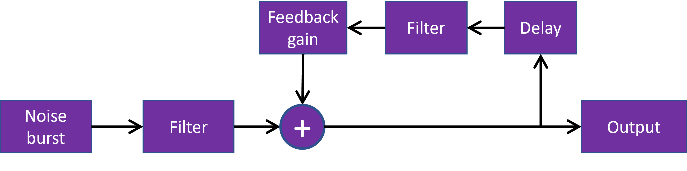

Digital Waveguide Filters
A physical medium absorbs high frequencies more heavily than low ones.
This can be modeled by placing a filter inside the loop.
The following model has lowpass filters both inside the loop and filtering only the excitation.
The lowpass filters are the default filters for the Web Audio API.

A basic waveguide model with two filters.